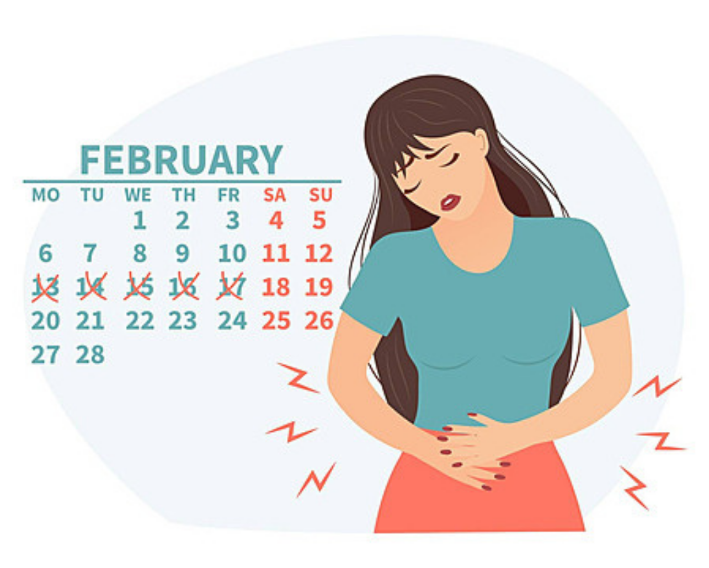

Menstruation, or a period, is the monthly process where the body releases blood and tissue when pregnancy does not occur. Each cycle, the uterus prepares a lining for a possible pregnancy—if none happens, that lining is shed through the vagina.
Most people get their first period between ages 11 and 14, and menstruation continues until menopause, around age 51. A period typically lasts 3 to 5 days.
During a period, it’s common to experience symptoms such as:
- 1. in the abdomen or pelvis
- 2. Lower back pain
- 3. Bloating and breast tenderness
- 4. Food cravings
- 5. Mood swings or irritability
- 6. Headaches and fatigue
Many of these signs also appear before the period starts, a group of symptoms known as Premenstrual Syndrome (PMS).
If someone notices major or sudden changes in their menstrual cycle, it’s important to consult a healthcare provider, as these changes may signal underlying health concerns.
Common Myths and Stereotypes About Menstruation
Myth: “Period blood is dirty or impure.”
Reality: Menstrual blood is just like any other bodily fluid it’s not dirty or morally impure.
Myth: “You shouldn’t bathe, shower, or wash during your period.”
Reality: Bathing and good hygiene are important; avoiding washing can increase the risk of infections.
Myth: “You shouldn’t exercise or swim during your period.”
Reality: Light to moderate exercise even swimming is safe and can help relieve cramps and improve mood.
Myth: “Everyone’s period works the same 28-day cycle, same flow, same symptoms.”
Reality: Menstrual cycles vary. Flow, cycle length, and symptoms differ widely between individuals.
Myth: “People on their period are emotionally unstable or overly moody.”
Reality: Hormones may influence mood, but it is inaccurate to stereotype menstruators as emotionally unstable.
Myth: “Menstruation should be kept a secret.”
Reality: Keeping periods secret reinforces stigma. Open conversations help normalize menstruation.
Myth: “If you're on birth control, you must get a period every month.”
Reality: Hormonal contraception often changes or pauses periods irregular cycles are common and not always unhealthy.
Myth: “Menstruation is shameful, impure, or a sign of weakness.”
Reality: Menstruation is a natural biological process and a sign of a healthy reproductive system.